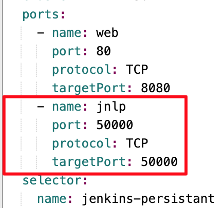
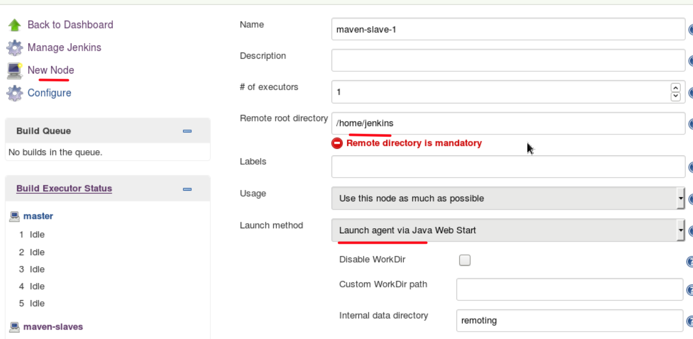
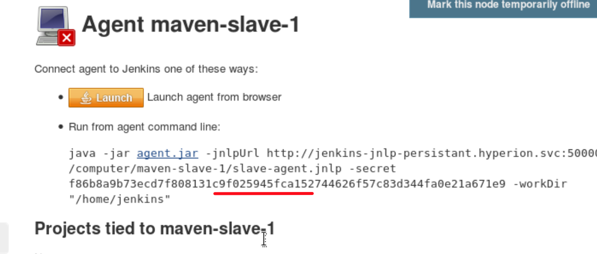

CI/CD 模块¶
Jenkins 安装¶
为了集成了jenkins组件, openshift 对jenkins 作了插件开发, 使用户可以以openshift的帐号一站式登录使用jenkins. 这些插件包括: 链接
- OpenShift Client Plugin: 作为oc客户端连接api server操作pipeline等对象
- OpenShift Sync Plugin: oc上的构建对象如buildConfig能够同步到jenkins里
- OpenShift Login Plugin: 使用oc上的帐号统一登陆到jenkins
下面以使用nfs作为存储保存jenkins 运行数据作为例子,展示安装过程.
- 配置NFS Server （node02-inner）
# vi /etc/exports
/diskb/export/jenkins-001 172.26.7.0/8(rw,sync,all_squash)
# systemct restart nfs
- 创建jenkin pv, 该卷被挂载到jenkins容器/var/lib/jenkins中. 前提Nfs server端目录已经创建好.
# oc create -f jenkins-pv-nfs.yml
- 使用jenkins-persistent 模板创建deployment config
# oc project hyperion
# oc process jenkins-persistent -n openshift \
-v JENKINS_SERVICE_NAME=jenkins-persistant,JNLP_SERVICE_NAME=jenkins-jnlp-persistant \
| oc create -f -
- 访问jenkins页面 https://jenkins-persistant-hyperion.apps.openshift.net.cn
改造jenkins能够使用pipeline docker agent¶
默认的安装的jenkins镜像里没有docker 命令binary, 也没有docker 执行环境. 需要做以下改造使得此pipeline可用, 简称dind (docker in docker)
- 重新打包镜像 openshift/jenkins-2-centos7:v3.11
- 挂载宿主机的/var/run/docker.sock入容器
- 打包新镜像
# docker build -t kennethye/jenkins-2-centos7:v3.11.1 -f Dockerfile.jenkins.repack .
# docker push kennethye/jenkins-2-centos7:v3.11.1
- 修改dc配置
# oc scale dc jenkins-persistant --replicas=0
# oc adm policy add-scc-to-user hostmount-anyuid -z jenkins-persistant
# oc set volume dc/jenkins-persistant --add --overwrite --name=var-run-docker --type=hostPath --path=/var/run/docker.sock
# oc patch dc/jenkins-persistant -p '{"spec":{"template":{"spec":{"containers":[{"name":"jenkins","image": "kennethye/jenkins-2-centos7:v3.11.1", volumeMounts": [{"name": "var-run-docker", "mountPath": "/var/run/docker.sock"}] }]}}}}'
# oc scale dc jenkins-persistant --replicas=1
改造jenkins-agent-maven能够运行docker in docker (dind)¶
默认的jenkins-agent-maven镜像没有docker客户端, 为了使容器化的jenkins agent能够具备镜像打包功能, 需要对它进行二次打包.
- 打包新镜像
# docker build -t kennethye/jenkins-agent-maven-35-centos7:v3.11.1 -f ./Dockerfile-jenkins-agent-maven-3.5 .
# docker push kennethye/jenkins-agent-maven-35-centos7:v3.11.1
添加jenkins slave进入jekinks集群步骤¶
把jenkins slave以容器的形式运行, 加入master组合成完整的jenkins集群
- 修改jenkins-persistant服务,添加jnlp port
jnlp port
- 参考教程, 在jenkins master添加node
new node
get new node secret
- 创建完成后, 保存以下信息
JENKINS_URL=http://jenkins-persistant.hyperion.svc (master的URL, 50000端口要打开)
JENKINS_SECRET=f6cxxxxxx (上一步创建node返回的密码信息)
JENKINS_NAME=maven-slaves (上一步创建node的名字)
- 在slave node节点启动docker, cpu内存的大小按实际分配. 注意不同node节点的secret和名字是不一样的. 必须在master上已经有记录,才能注册得上.
# docker run -d --restart always --name jenkins-agent-maven \
-v /var/run/docker.sock:/var/run/docker.sock:rw \
--cpu-shares 1024 --memory 2G -e 'JENKINS_URL=http://jenkins-persistant.hyperion.svc' \
-e 'JENKINS_SECRET=f6cxxxxxx' -e 'JENKINS_NAME=maven-slaves' \
kennethye/jenkins-agent-maven-35-centos7:v3.11.1